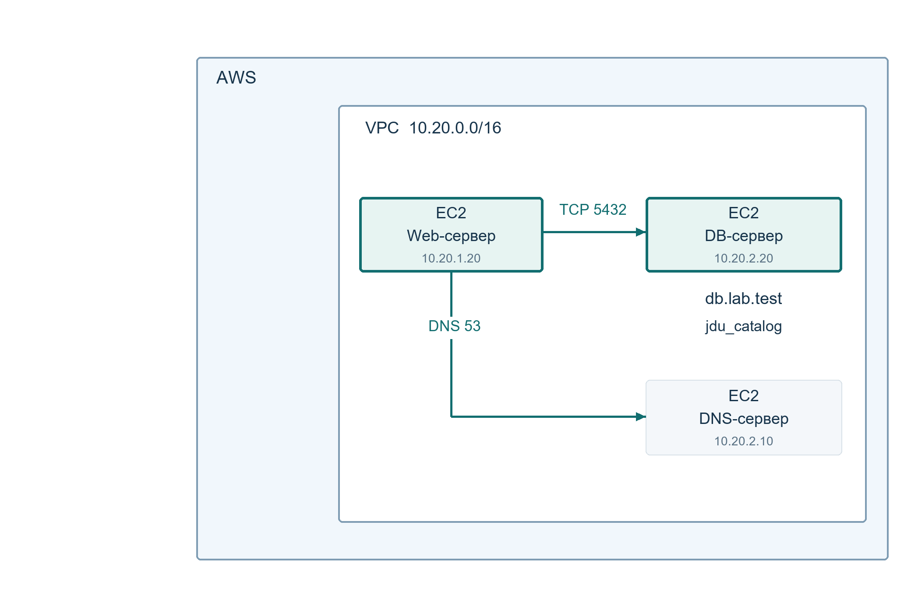

M3 Подключение к PostgreSQL с аутентификацией (9)
Практика P0–P5 · Задания M0–M5
Связанное задание: P3.
Требуемый результат
Перед началом убедитесь на странице оценок, что за M2 получен полный балл.
В PostgreSQL из P3 создайте основную БД и две роли, указанные ниже. Таблицы приложения создаются в M4.
- DB-сервер (P3.2-P3.6). Создайте БД и роли и разрешите подключение к нужной БД с указанными ролями только с Web-сервера (
10.20.1.20/32). Используйте SCRAM, как в P3. - Web-сервер (P3.7-P3.8). Подключитесь к
db.lab.testпод рабочей ролью и выполните SELECT. Сохраните существующий пароль для профиляmissionтем же способом, что и в P3.8.
Схема задания

| Настройка | Значение |
|---|---|
| Имя базы данных | jdu_catalog |
| Роль настройки | catalog_setup |
| Рабочая роль | catalog_app |
Критерии оценки
Каждый критерий даёт 1 балл.
| № | Условие |
|---|---|
| 1 | PostgreSQL 16/main работает (active). |
| 2 | Настройки 16/main, стандартный data directory и socket/peer для OS postgres корректны. |
| 3 | PostgreSQL слушает 10.20.2.20:5432. |
| 4 | Владельцем БД и schema public является соответствующая setup-role. |
| 5 | Runtime LOGIN; нет superuser/CREATEDB/CREATEROLE/REPLICATION/BYPASSRLS и повышающих membership. Setup LOGIN при сборке или NOLOGIN после неё. |
| 6 | HBA допускает SCRAM лишь для перечисленных DB/role с Web /32, без широких разрешений. |
| 7 | Новый аутентифицированный SELECT с Web возвращает нужные DB/user/значение; P по IP, M через обычный DNS. |
| 8 | Один неверный пароль явно отклонён в том же запуске, где правильный работает. |
| 9 | С Web запрещены postgres-role, посторонняя DB и чужой profile; ещё не созданная practice DB не обязательна. |
Проверка и отправка
- Откройте страницу оценок и выберите M3.
- Запустите проверку выбранного задания.
- По завершении появятся число выполненных критериев и результат каждого. Исправьте пункты с пометкой «Исправить» и запустите проверку снова. «Не проверен» означает, что результат определить не удалось. Баллы отображаются в списке заданий.